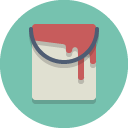

Welcome to Materialstrap
Materialstrap is a HTML and CSS framework written from scratch built on the principles of Bootstrap but with the modern and sleek Material Design style. Get a modern, beautiful website up in seconds! Compatible with both desktop and touch devices, we think you will love Materialstrap.
Download NowFusion
Taking Material Design to the big screen in a big way! We have created a robust Bootstrap-like framework using the core principles of Material Design. Taking them from the small screen to the big. We have created a beautiful fusion with the bold colours and smooth transitions of MaterialDesign with the robust and well-loved Bootstrap design and framework. Something familiar for all kinds of users means your website won’t be dreaded on a small screen or empty on a large one.
Elegance
We believe that websites should be pleasing to look at and meld together, say goodbye to green-on-yellow colour schemes and hello to bold colours with a light background. Gone are the days when your main content is a box with a border and rounded corners, Materialstrap handles all the structure you need. Don’t rely on floats! Use our 6 column gridded layout to perfectly layout your design. We’ll do all the heavy stuff, download structure your basic page, adjust the colours, and off you go!
Robust
The semantic web is here to stay and MaterialStrap is built with HTML. With a strong focus on meaningful tags and styling, we’re using HTML5’s full toolbox to power your websites. We want your websites to be beautiful and be readable, no need for divs inside divs to achieve perfect results. We want to help you and your websites move into the future.
Modern
Materialstrap takes the very best design elements from Bootstrap and Material Design, this produces a beautiful modern look. Excellent for matching with supporting apps or just as your sites mobile page, using Material Design elements feel great on any mobile device. For desktop users, a familiar bootstrap style page but with bold colours and smooth transitions that really makes your website a joy to use.
Adaptable
If you have a use case, we have the tools! A full framework designed for developers and designers. From adjusting colours to designing and implementing something completely unique we have something to offer you. Materialstrap is also fully open source, so if you think we need that little bit extra go ahead and fork us on Github! We love to see new ideas and features implemented!